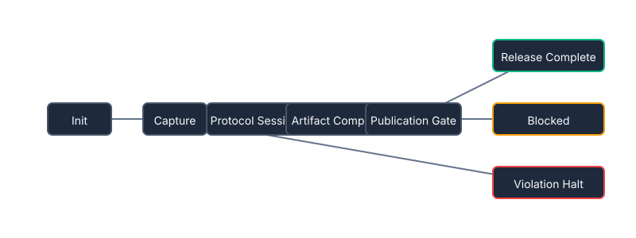

Architecture Overview

The canonical trajectory mapping explicit flow dependencies against terminating bounds.
Verified Scenarios
Baseline Successful Run
A valid deterministic traversal cleanly passing protocols and compiling artifacts through the formal publication gate.
Invariant Breach
A forced invalid transition triggering an invariant fault. Evaluates execution attempts to leap explicitly bounded logic barriers without requisite signatures.
Governance Delay
A properly structured release request validly positioned at the Publication Gate, subsequently rejected by external governance logic. Remains patiently blocked without collapsing.
Inspectable Trace Evidence
Every operational execution generates an explicit audit trail providing structured data evaluating transition events, node states, and payload compliance limits. These artifacts act as definitive chronological evidence over the state-machine trajectory.
simulation_trace.jsonsimulation_trace.yamltransition_log.csvviolation_report.yamlsimulation_summary.mdstate_timeline.dot
Note: The interactive runtime graph viewer is currently in active visual refinement. The underlying architecture logic, baseline simulations, and terminal scenario validations natively available within the backend trace output logs remain robust, deterministic, and securely positioned for immediate structural review.
Review Integration Capabilities
If you are interested in parsing these bounded topologies, auditing simulated trajectories, or evaluating protocol compliance, early review access is available upon request.